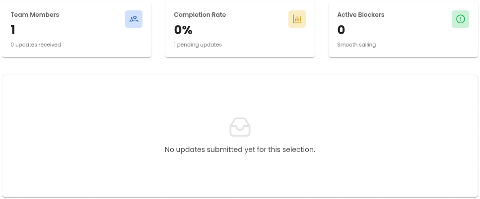
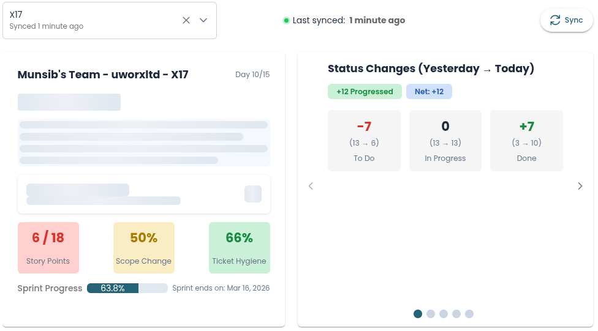

<p-tabView *ngIf="featuresChecked" [(activeIndex)]="tabIndex" (activeIndexChange)="tabChanged($event)">
  <p-tabPanel *ngIf="getTab('WorklogInsights/Tab')?.enabled">
    <ng-template pTemplate="header">
      <span>Worklog Insights & Reminders</span>
    </ng-template>
    <ng-template pTemplate="content">
      <khoji-team-worklog-reminder *ngIf="selectedTab==='WorklogInsights/Tab'"></khoji-team-worklog-reminder>
    </ng-template>
  </p-tabPanel>

  <p-tabPanel *ngIf="getTab('TeamPulse/Tab')?.enabled">
    <ng-template pTemplate="header">
      <span>Team Pulse</span>
      <i *ngIf="!getTab('TeamPulse/Tab')?.unlocked" class="pi pi-lock" style="margin-left: 0.5rem;"></i>
    </ng-template>
    <ng-template pTemplate="content">
      <khoji-team-pulse *ngIf="selectedTab==='TeamPulse/Tab' && getTab('TeamPulse/Tab')?.unlocked"></khoji-team-pulse>
      <div *ngIf="selectedTab==='TeamPulse/Tab' && !getTab('TeamPulse/Tab')?.unlocked">
        
        <khoji-feature-unlock [featureId]="5" [showDialog]="true"></khoji-feature-unlock>
      </div>
    </ng-template>
  </p-tabPanel>

  <p-tabPanel *ngIf="getTab('StandupBoard/Tab')?.enabled">
    <ng-template pTemplate="header">
      <span>Standup Board</span>
      <i *ngIf="!getTab('StandupBoard/Tab')?.unlocked" class="pi pi-lock" style="margin-left: 0.5rem;"></i>
    </ng-template>
    <ng-template pTemplate="content">
      <khoji-standup-board *ngIf="selectedTab==='StandupBoard/Tab' && getTab('StandupBoard/Tab')?.unlocked"></khoji-standup-board>
      <div *ngIf="selectedTab==='StandupBoard/Tab' && !getTab('StandupBoard/Tab')?.unlocked">
        
        <khoji-feature-unlock [featureId]="6" [showDialog]="true"></khoji-feature-unlock>
      </div>
    </ng-template>
  </p-tabPanel>
</p-tabView>

<div *ngIf="!featuresChecked" class="w-full h-screen flex align-items-center justify-content-center">
  <p-progressSpinner [style]="{ width: '70px', height: '70px' }" strokeWidth="4"
    animationDuration="1s"></p-progressSpinner>
</div>